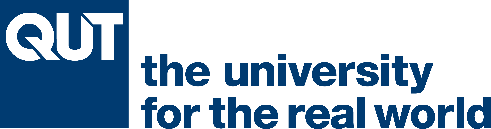

AIMOS Conference 2024
19 to 21 November 2024
ANU, Canberra/Kanbarra
ANU, Canberra/Kanbarra
Photo by Maxwell Ingham on Unsplash.
AIMOS2024 is the sixth annual conference for the Association for Interdisciplinary Metaresearch & Open Science.
The purpose of AIMOS is to make the research process more trustworthy and efficient, and to promote the study of how research is done and how it can be improved. Our annual conference is an important collaborative space that advances this purpose.
AIMOS2024 will bring together researchers from multiple scientific disciplines to talk about how research is done and how we can do it better.
We have three great plenary speakers.
 |
 |
 |
|
| Carl Bergstrom | James Wilsdon | Stuart Ritchie | |
| Carl Bergstrom is a theoretical and evolutionary biologist and a professor at the University of Washington in Seattle, Washington, United States. Bergstrom is a critic of low-quality or misleading scientific research. He is the co-author of a book on misinformation called Calling Bullshit: The Art of Skepticism in a Data-Driven World. | Laure Wynants is a biostatistician and assistant professor of epidemiology at the Maastricht University, the Netherlands, and KU Leuven, Belgium. She teaches various methodological courses at the faculty of Health, Medicine and Life Sciences. Her main research area is clinical risk prediction modeling for diagnosis and prognosis, and she is best known for leading the Living Review on prediction models for covid-19. | Stuart Ritchie is the science writer at the i newspaper in the UK, and author of Science Fictions. | |
| Photo by Kris Tsujikawa, CC BY-SA 4.0, Link. |

|

|

|

|

|
|
| Adrian Barnett | Danny Kingsley | David Borg | Lene Seidler | Trung Thành Ngô | Alexander Gibson |
|
|

|  |
Sign up here to the AIMOS mailing list to get updates on the conference and other meta-research events.
Got a question about the conference? Email Adrian at: a.barnett@qut.edu.au.
Want to know more about AIMOS? Here's our web page.
Thanks to Rex Parsons for help with the website.